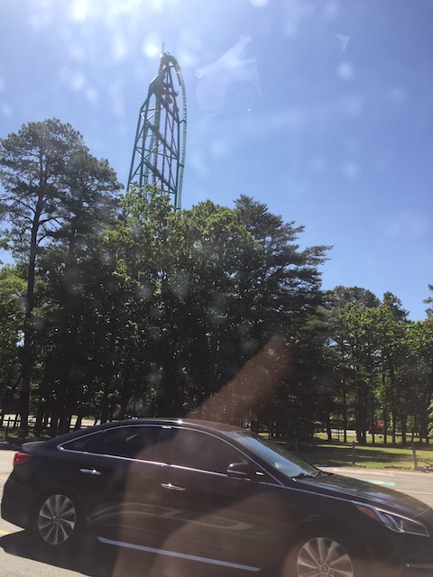
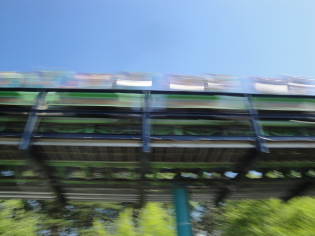
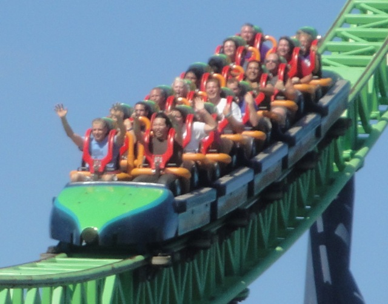
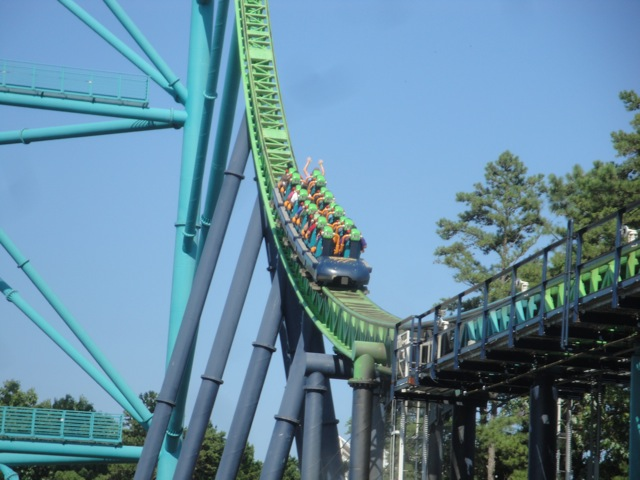
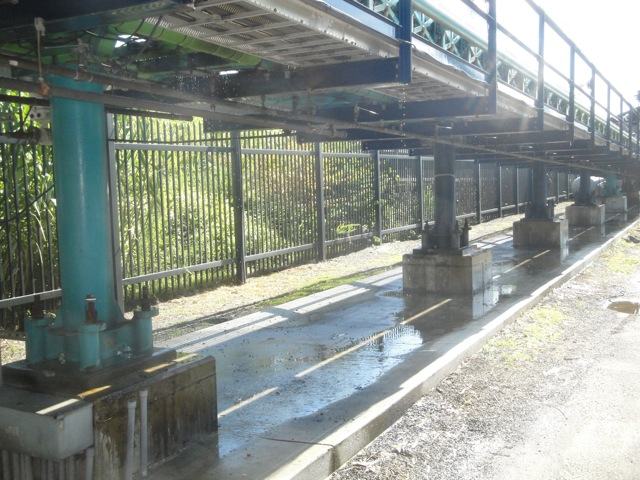
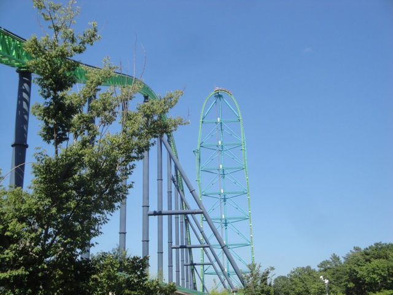

| |

Kingda Ka Review

We're here at Six Flags Great Adventure. Today's ride we'll be traveling back in time to review Kingda Ka. During its time alive, the tallest coaster in the world and the 2nd fastest. After we got in the seats and pulled down the unnecesarry OTSRs (I really wish Six Flags Great Adventure would've get rid of the damn things and just ran it with lap bars like Top Thrill Dragster, instead of getting rid of the entire damn ride itself), you pulled out into the launching area. You then rolled up and stopped. We saw the train in front of us launch and head up the tower. And yeah. It was big. Tallest roller coaster in the world and the 2nd faster roller coaster in the world (I want to go to Ferrari World soon) during its time alive. After the earlier car headed down the first drop, we moved on up and stopped. We kept hearing announcements thanking us for visiting the park, riding Kingda Ka, and got a reminder to keep our arms down. Once again, such a warning was completely useless as we were just gonna raise our arms immidietly once we launched. But at least they didn't repeat it over and over and over and over again like they do on Top Thrill 2. Arms down. Arms down. Arms down. Arms down. Arms down. SHUT UP!!! Anyways, we launched. Again, it was not the most intense launch in the world. But it still was a good launch. The Kingda Ka launch was interesting for a couple reasons. It's almost like it had two launches back to back. You launched once, you were going fast, and when it felt like friction was about to slow you down, you got another kick and went even faster until you were reaching 128 mph. You then ROSE up into the sky. Now there was no need to gawk over the view. It was just New Jersey, so the view was pretty much sh*t. But then you got yanked out of your seat and thrown into a downward spiral 400 feet to the ground. Now this right here was my favorite part of the ride. The drop was fantastic! I personally loved the airtime you get going into the spiral. Now you may not have gotten airtime depending on the weight of the train and how fast you were going at the top. But I got airtime on all of my rides. After we fell to the ground, we rose up into a big camelback hill. Sadly, there wasn't airtime here or anything like it. The hill mainly functioned as a brake run. No airtime, no sense of speed, just brake run, slowing down the entire way. And that was Kingda Ka. You all know that I'm no fan of the way the Discovery/Travel Channel and the General Public treat the ride and disagree with the whole montra of "ZOMG!!! TALLEST ROLLER COASTER IN THE WORLD!!! IT'S SO CRAZY!!!" But despite what you may think, I'm one of the pro-Kingda Ka enthusiasts. I know several of my friends HATE Kingda Ka and claimed it to be a rough peice of sh*t, and are glad that it's now dead. Yeah, it rattles a little and Top Thrill Dragster was better (Looking foreward to trying out Top Thrill 2 next Cedar Point visit), but come on. I still found it to be a fun ride. And....yeah. I'm pissed that they tore the ride down. And ESPECIALLY PISSED THAT THEY JUST CLOSED IT IN THE MIDDLE OF THE NIGHT WITH NO ANNOUNCEMENT OR ANYTHING!!!! F*CKING INEXCUSABLE AND ANY ENTHUSIAST DEFENDING THIS BECAUSE THEY'RE SICKOFANTIC LITTLE BITCHES WHO DON'T DARE DISAGREE WITH ANYTHING CEDAR FLAGS DOES CAN GO F*CK THEMSELVES!!!
8/10
Location: Six Flags Great Adventure
Opened: 2005
Died: November 10, 2024
Built by: Intamin
Last Ridden: June 18, 2021
Kingda Ka Photos













Home
|